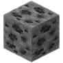
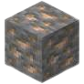
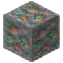
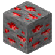
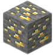
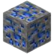
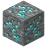
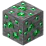

-
Minerio de Carvao 
- Y Mínimo: 0
- Y Máximo: 256
- Y Frequente: 90
É um dos mínerios mais comuns e fáceis de encontrar. Usados para criação de tochas e combustível.
-
Minerio de Ferro 
- Y Mínimo: -32
- Y Máximo: 256
- Y Frequente: 16
Um dos principais materiais de se coletar para craftar itens, tendo armaduras e equipamentos como os mais usados.
-
Minerio de Cobre 
- Y Mínimo: -16
- Y Máximo: 112
- Y Frequente: 48
Um minério relativamente comum. Possui fins decorativos, já que tem a particularidade de mudar de cor ao longo do tempo.
-
Minerio de Redstone 
- Y Mínimo: -64
- Y Máximo: -32
- Y Frequente: -64
Usado para criar bússolas, relógios e trilhos elétricos. Chamamos um "circuito de redstone" uma estrutura que ativa, controla ou até mesmo automatiza mecanismos.
-
Minerio de Ouro 
- Y Mínimo: -64
- Y Máximo: 32
- Y Frequente: -16
O melhor uso é para criação de maçãs douradas. Serve para criar relógios, trilhos, blocos e decorações. Não crie ferramentas de ouro se você quer algo que quebre absurdamente rápido.
-
Minerio de Lapis Lazuli 
- Y Mínimo: -64
- Y Máximo: 64
- Y Frequente: 0
Mais útil na utilização de encantamentos, mas também pode ser usado para tingir lãs, armaduras de couro, camas, vidro, coleiras de lobos, etc.
-
Minerio de Diamante 
- Y Mínimo: 16
- Y Máximo: -64
- Y Frequente: -64
Um dos itens mais raros e com certeza mais úteis, mais usados e mais desejados no jogo para craftar armaduras, ferramentas e até mesmo a mesa de encantamento.
-
Minerio de Esmeralda 
- Y Mínimo: -16
- Y Máximo: -256
- Y Frequente: 224
Encontrado mais rapidamente nas montanhas e é ainda mais raro de ser encontrado. Seu propósito é a realização de trocas de itens com os villagers.